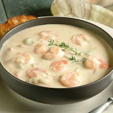
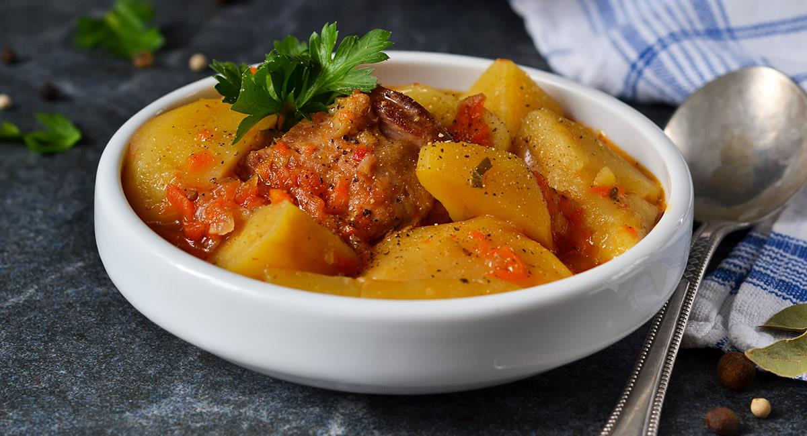
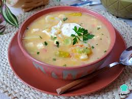
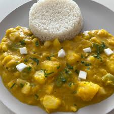
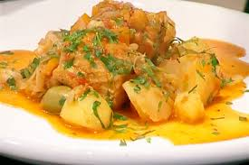
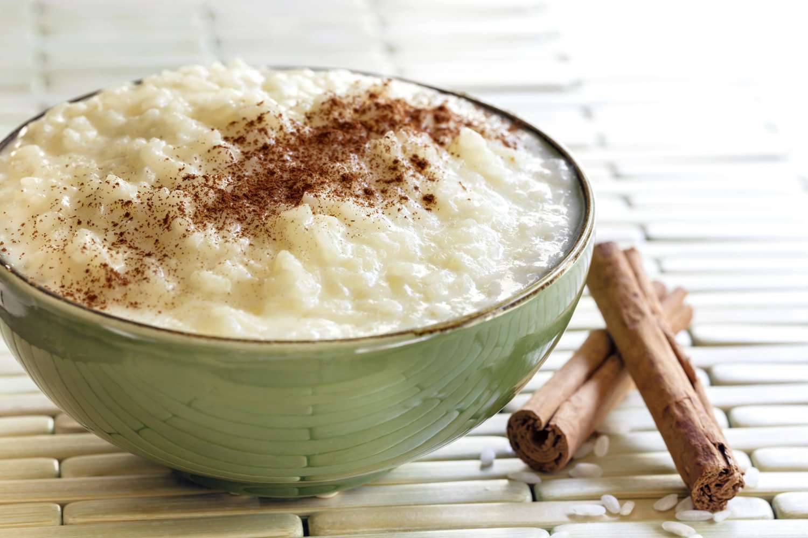
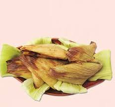
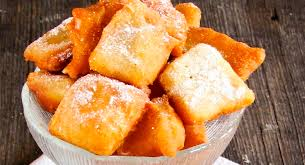
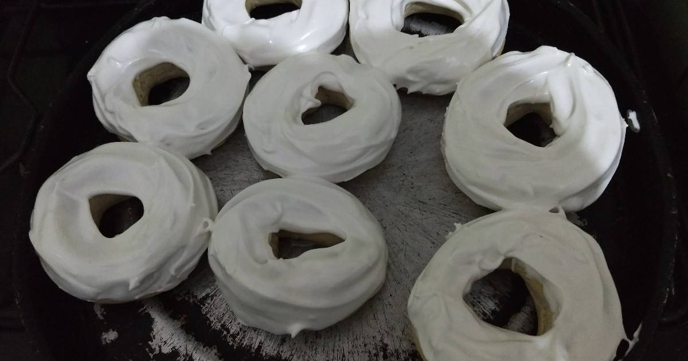

Esta tradicional sopa se prepara con camarones secos que se remojan previamente, luego se hace un sofrito de cebolla, ajo, tomate y ají colorado; se agregan papas peladas, arvejas, leche, queso criollo y se cocina hasta que todo esté bien tierno, obteniendo una sopa cremosa y con un sabor marino intenso.

Un plato muy consumido en Semana Santa que combina arvejas verdes cocidas con un ahogado de cebolla, ajo, comino y ají amarillo molido; se agregan papas cocidas y queso, y se deja cocer a fuego lento hasta que los sabores se mezclen perfectamente.

Es una sopa espesa preparada con quinua cocida, papas, zanahorias, arvejas, un toque de leche y queso rallado; todo se cocina con un sofrito de cebolla, ajo y aceite hasta lograr una consistencia densa y nutritiva, ideal para el almuerzo.

Este plato se elabora con zapallo picado en cubos, arroz, papa, cebolla, ajo, leche y queso; se hierve hasta que el zapallo se deshace, logrando un locro suave, cremoso y ligeramente dulce, muy apreciado por su sabor reconfortante.

Plato típico del Viernes Santo hecho con bacalao previamente desalado, acompañado de papas, cebolla, tomate, pimientos, aceitunas y orégano; todo se cocina a fuego lento hasta que los ingredientes estén bien integrados y aromáticos.

Un postre clásico preparado con arroz cocido lentamente en leche con canela, clavo de olor, azúcar y una pizca de sal; se deja cocinar hasta que la mezcla esté espesa y cremosa, y se puede servir caliente o frío, espolvoreado con canela.

Se preparan con choclo (maíz tierno) molido, mezclado con manteca, azúcar, leche y queso; esta mezcla se coloca en moldes o envuelta en chalas de maíz y se hornea hasta que estén doradas por fuera y suaves por dentro.

Dulce típico frito elaborado con masa de harina, huevo, leche y un poco de azúcar; se extiende la masa, se corta en formas de rombo y se fríen hasta dorar, luego se espolvorean con azúcar impalpable antes de servir.

Son anillos dulces horneados hechos con harina, yemas de huevo, azúcar, manteca y anís; una vez fríos, se decoran con un glasé blanco que les da su clásica apariencia brillante y un toque dulce muy característico.